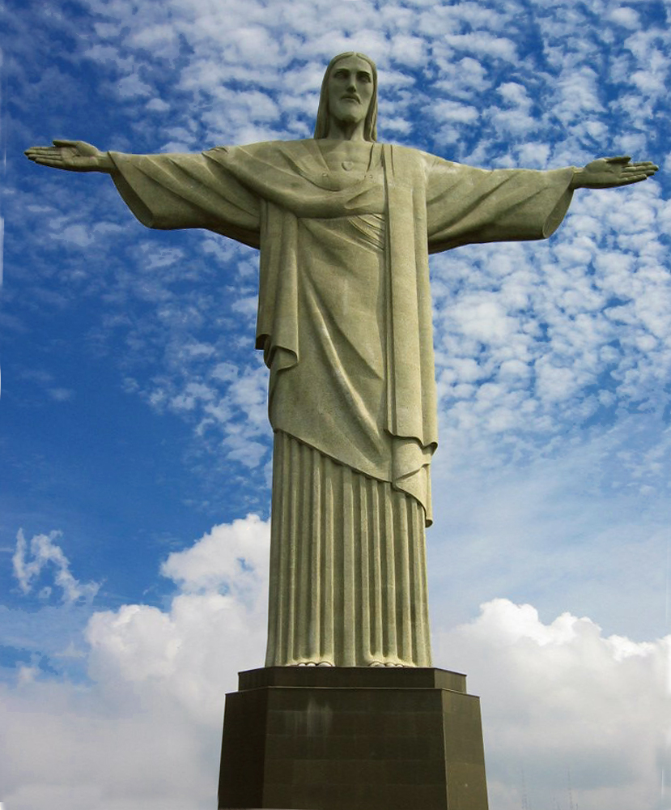

Cristo Redentor

Descripción
El Cristo Redentor es una enorme estatua de Jesucristo con los brazos abiertos, considerada un símbolo de paz, bienvenida y fe. Es uno de los monumentos más reconocidos de Brasil y una de las imágenes más famosas del mundo.
La escultura representa la protección de Cristo sobre la ciudad de Río de Janeiro y destaca por su impresionante tamaño y ubicación en la cima del cerro Corcovado.
Ubicación
Está ubicado en la cima del cerro Corcovado, dentro del Parque Nacional de la Tijuca, en la ciudad de Río de Janeiro, Brasil.
Curiosidades
- La estatua mide aproximadamente 38 metros de altura incluyendo su pedestal.
- Sus brazos extendidos tienen una distancia aproximada de 28 metros.
- Fue inaugurada el 12 de octubre de 1931 después de casi nueve años de construcción.
- Es considerada uno de los mayores símbolos turísticos de Brasil.
Datos importantes
El monumento fue diseñado por el escultor francés Paul Landowski y construido con la colaboración de ingenieros brasileños. Su estructura combina hormigón armado y piedra esteatita, un material resistente utilizado en su revestimiento.